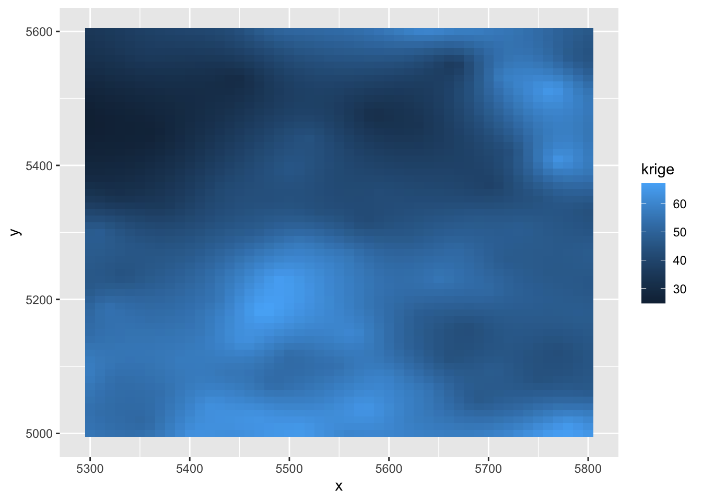
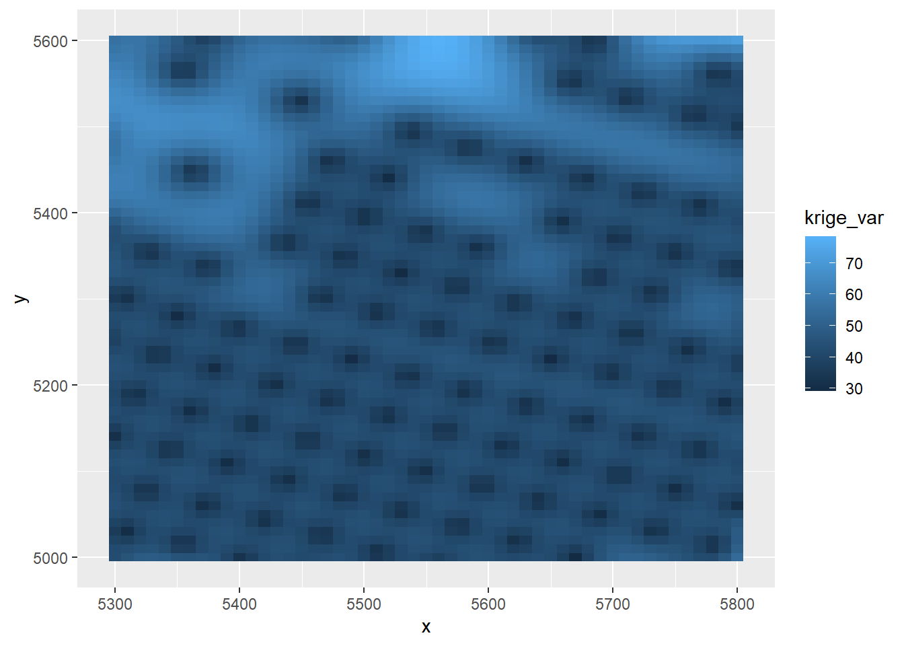

This Lab corresponds to Cp 4: 9
First, we fit the model \[Z(\mathbf{s}) = \mu + U(\mathbf{s}) + \nu(\mathbf{s}).\] Here trend = “cte” specifies that the trend \(\mu(\mathbf{s})\) is a constant (\(\mu(\mathbf{s})=\mu\)).
library(geoR)
data(ca20)
fit = likfit(ca20, ini = c(100, 60), trend = "cte")Secod, we setup the Ordinary Kriging.
pred_locs = expand.grid(x = seq(5300, 5800, 10), y = seq(5000,5600, 10)) # new locations s_0 created
head(pred_locs) ## Here are the first six locations## x y
## 1 5300 5000
## 2 5310 5000
## 3 5320 5000
## 4 5330 5000
## 5 5340 5000
## 6 5350 5000KC = krige.control(obj.model = fit)Third, we make predictions on all locations on gr
ca20pred = krige.conv(ca20, loc = pred_locs, krige = KC)Last, we visualise both Kriging estimates and Kriging variances. The function to use is geom_tile
ca20_res = data.frame(x = pred_locs[,1], y = pred_locs[,2],
krige = ca20pred$predict, krige_var = ca20pred$krige.var)
library(ggplot2)
ggplot(ca20_res) + geom_tile(aes(x = x, y = y, fill = krige))
Kriging Variances
ggplot(ca20_res) + geom_tile(aes(x = x, y = y, fill = krige_var))
Kriging weights
coords = cbind(c(0.2, 0.25, 0.6, 0.7),
c(0.1, 0.8, 0.9, 0.3)) # data
KC = krige.control(ty = "ok", cov.model = "mat",
kap = 1.5, nug = 0.1,
cov.pars = c(1, 0.1)) # model parameter
# Weights
krweights(coords, c(0.5, 0.5), KC) ## [1] 0.1935404 0.2301559 0.2125838 0.3637199Both ordinary kriging and universal kriging using setting type.krige = “ok”. Once you put the trend in, the function will distinguish two types of kriging.
Work with polynomial.
fit = likfit(ca20, ini = c(100, 60), trend = "1st")
gr = pred_grid(ca20$borders, by = 10)
KC = krige.control(obj.model = fit, trend.l="1st",
trend.d="1st")
ca20pred = krige.conv(ca20, loc = gr, krige = KC)fit2 = likfit(ca20, ini = c(100, 60), trend = ~altitude)
gr = pred_grid(ca20$borders, by = 10)
graltitude = rnorm(10908,mean=5.5)
KC2 = krige.control(type.krige = "ok", obj.model=fit2,
trend.d=~altitude, trend.l=~graltitude)
ca20pred2 = krige.conv(ca20, loc = gr, krige = KC2)In universal kriging, we need to know \(x(\mathbf s_0)\). In the above code, I randomly generated \(x(\mathbf s_0)\) from graltitude = rnorm(10908,mean=5.5). In practice, you shall know \(x(\mathbf s_0)\) in advance.